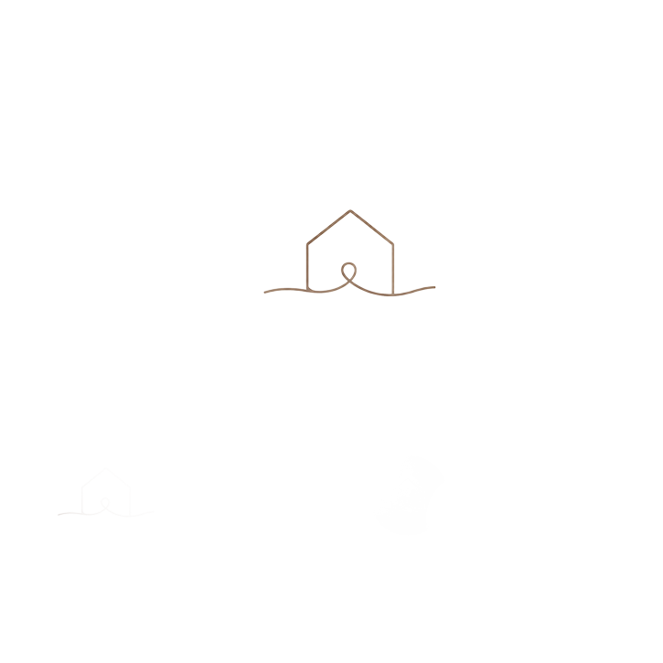
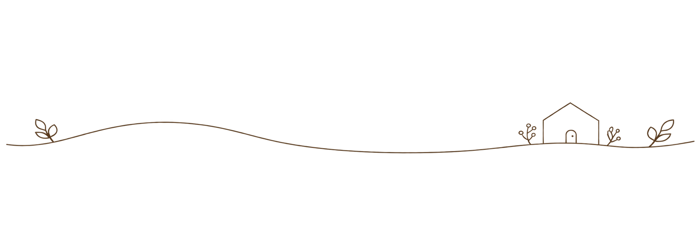
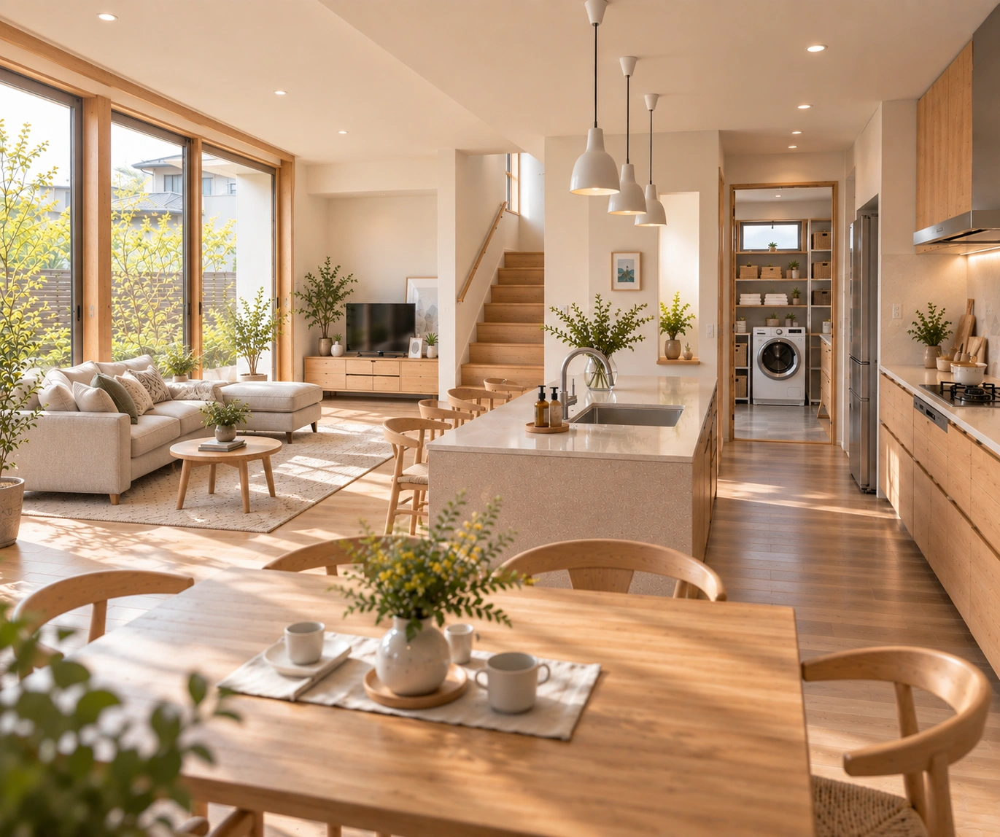
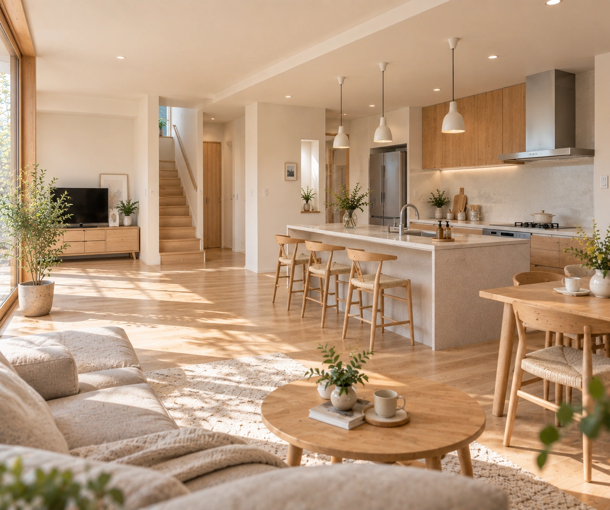
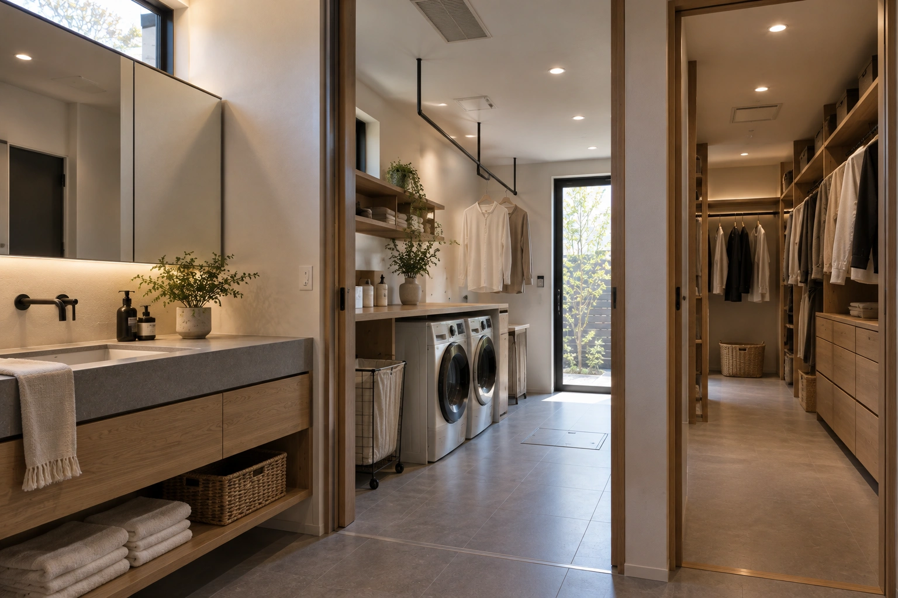
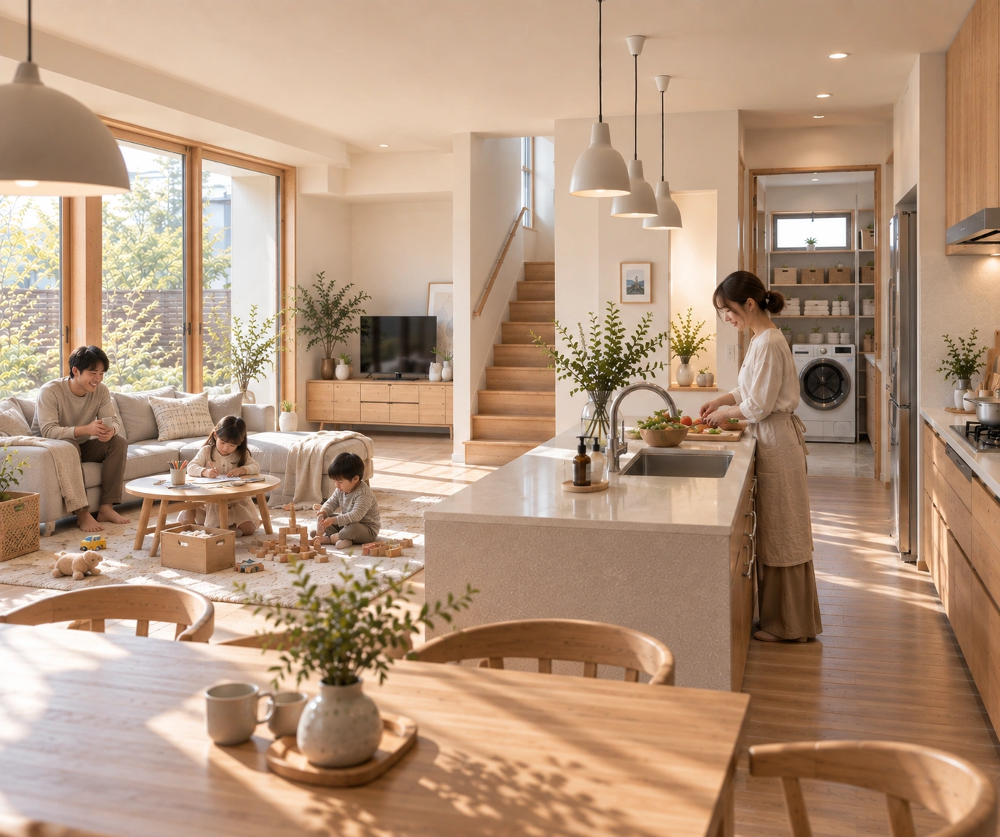

01 | Lifestyle
家事動線を短くした、子育て家族の家
共働きで子育てをしながら、毎日の家事に追われていたご家族。
「家事の時間を少しでも短くして、家族と過ごす時間を増やしたい」という想いから、
キッチンを中心に、洗面・ランドリー・収納までをスムーズにつなぐ家事動線を計画しました。
家事をしながらでも子どもの様子を見守れるLDKなど、忙しい毎日にゆとりが生まれる工夫を
詰め込んだ住まいです。
30代ご夫婦｜お子さま2人｜4人家族

つむぎ工務店TSUMUGI KOUMUTEN施工事例
家族の数だけ、暮らしがある。
つむぎ工務店の家づくり。


家事を短く、
家族の時間を長く。
01 | Lifestyle
共働きで子育てをしながら、毎日の家事に追われていたご家族。
「家事の時間を少しでも短くして、家族と過ごす時間を増やしたい」という想いから、
キッチンを中心に、洗面・ランドリー・収納までをスムーズにつなぐ家事動線を計画しました。
家事をしながらでも子どもの様子を見守れるLDKなど、忙しい毎日にゆとりが生まれる工夫を
詰め込んだ住まいです。
30代ご夫婦｜お子さま2人｜4人家族
暮らしの工夫
毎日の家事をもっと軽やかに。
家族の時間を育む、暮らしの工夫。

POINT 01
料理をしながらでも、リビングやダイニングで過ごす家族の様子が自然と目に入るキッチン。行き止まりのない回遊動線にすることで、家族と動線が重なりにくく、忙しい時間帯の家事もスムーズに。

POINT 02
洗面・ランドリールーム・ファミリークローゼットを近くにまとめ、「洗う→干す→しまう」までを短い動線で完結できる間取りに。洗濯物を抱えて家の中を何度も行き来する負担を減らし、毎日の家事をラクにします。

POINT 03
家族がそれぞれ違うことをしていても、自然と気配を感じられる開放的なLDK。キッチンからリビングまでゆるやかにつながる空間にすることで、子どもを見守りながら家事ができ、家族が自然と集まる場所をつくりました。
家づくり見学会
家族のこれからの暮らしを、
ちょっと覗いてみませんか？